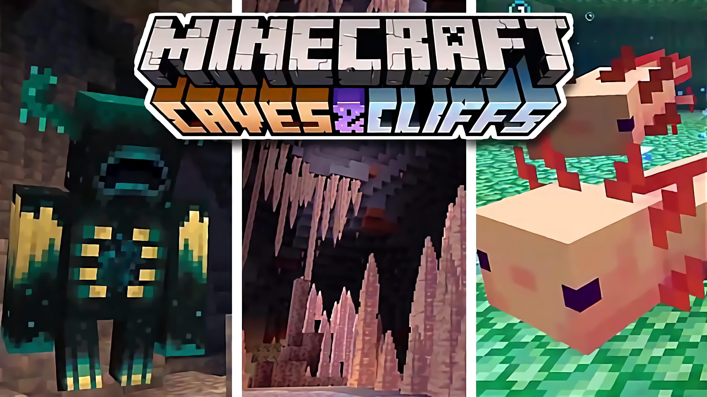

Server Information
Version: -
Premium Account: -
Announcement
All members are encouraged to read the server guidelines here.
Implementation of Server Guidelines
By: aCATdemy10 December 2020, 23:27
Dear members of the aCATServer Network,
The server guidelines have been implemented and will be effective once the server starts. All members are encouraged to read through and understand them to defend yourselves in the event of a sanction dispute.
On that note, I will be enforcing the server guidelines more strictly this time.
Yours faithfully,
aCATdemyOwner of aCATServer Network
Updates Regarding aCATServer for Minecraft 1.17
By: aCATdemy9 December 2020, 15:26  Image by CaptainSparklez. Retrieved from https://www.youtube.com/watch?v=2yqHKerJq9E
To all members invited to join my Minecraft server,
Allow me to start by warmly welcoming you on this journey towards my Minecraft 1.17 server! Almost a year has passed since my Minecraft 1.16 server was shut down. It was a unique experience especially for me since that was my first time handling a server so in-depth. I have to admit that I did not do a good job back then as a server owner in terms of moderation, and I sincerely apologise for it. The way I moderate the server back then has created a line of fire between groups of people. It appears clear to me that I did not anticipate that situation in my mind before creating the server. Looking at the bright side, waves have calmed, the fire is extinguished, and everyone is back on track. Thank you for your maturity and understanding that this situation happened in a video game and is not worth fighting over in real life.
Now, please allow me to share the upcoming plans for my Minecraft 1.17 server.
First and foremost, I am excited to announce that my server will have its official name, aCATServer Network. Besides, the portal will have its name too, aCATServer Portal.
Next, I have decided to come up with a list of rules and punishments which will be published at the same time. While I understand it can be quite a pain in the ass to play on a server with rules, I do wish to seek your understanding that these rules are in place to ensure this server will be a place for everyone to enjoy. However, I can too, anticipate that some people will still choose to not follow the rules and create troubles for the server. More information will be shared in the upcoming months of how the server will deal with such cases of nuisance.
Secondly, depending on the feasibility, this server may have plug-ins installed to spice up the joy of Minecraft. Of course, these plug-ins will not be too over-powered or broken as it will ruin the fun of the server after all. If feasible, the plug-ins that will be installed would be /tpa and /sethome.
As Gayle Forman once said, "You win some, you lose some". Still, the loss would be mobGriefing being turned on, whilst the win being keepInventory enabled for all everyone! This is carried over from the previous 1.16 server.
It is estimated that Minecraft 1.17 will be set to sail in Q2 2021, which is probably 4 to 6 months away from now. In the meantime, I hope all of you are living in the pink of health.
Yours faithfully,
aCATdemyOwner of aCATServer Network